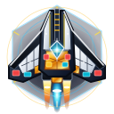
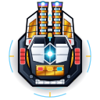
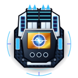
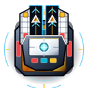
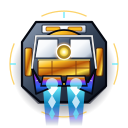

赫利俄斯
WAVE 1/100
核心站
100%
战功
1,200
残骸
150
AI 僚机护航
⚠ 克拉肯虚空利维坦 · KRAKEN OVERMIND
100%
护盾 SHD
100%
装甲 ARM
100%
电网 PWR
TWR 1.9S

船坞改装
阵营: 赫


星际船坞 · 3栏正交剖面改装台 (ORTHOGRAPHIC DOCKYARD)
反应堆功率备份比: +28% SAFE · 推重比 TWR: 1.92 (S级) · 固定槽位体积恒定
晋升火控 Lv.2 (200战功)
返回战场
① 主力星舰底盘 (4×2 双阵营)
HELIOS
② 舰体剖面与三色挂点
Delta 截击舰


NASA 白瓷热防护瓦 + 24K 聚酰亚胺金箔舱
[红 W] 火控
电磁轨道炮
[绿 B] 内舱
无人机母舱
[紫 P] 引擎
霍尔推进器
③ 航宇武器与内部方舱库
点击立即挂载